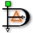

Dia
Dieser Artikel wurde für die folgenden Ubuntu-Versionen getestet:
Ubuntu 14.04 Trusty Tahr
Zum Verständnis dieses Artikels sind folgende Seiten hilfreich:

Dia  ist ein Programm zum Zeichnen von Diagrammen wie Flussdiagrammen, Datenbank-Diagrammen, UML-Diagrammen usw. Es sind aber auch Freihand Diagramm-Zeichnungen möglich.
ist ein Programm zum Zeichnen von Diagrammen wie Flussdiagrammen, Datenbank-Diagrammen, UML-Diagrammen usw. Es sind aber auch Freihand Diagramm-Zeichnungen möglich.
Dia beherrscht den Umgang mit Ebenen, das automatische Ausrichten von Diagrammen, Export der Diagramme in diverse Grafik- und Vektorformate, kann um eigene Diagramm-Arten erweitert werden und ist über Python-Skripte erweiterbar. Die Bedienung und das Aussehen sind MS Visio ähnlich, allerdings kann dessen proprietäres Datei-Format nicht gelesen werden.
Wer ein Programm zur Erstellung von Nassi-Shneiderman-Diagrammen (Struktogrammen) sucht, verwendet besser spezielle Programme.
Installation¶
| Zwei-Fenster-Modus |
Dia lässt sich direkt aus den Paketquellen von Ubuntu installieren. Dazu muss eines der beiden Pakete installiert werden [1].
dia-gnome (an GNOME angepasste Version)
 mit apturl
mit apturl
Paketliste zum Kopieren:
sudo apt-get install dia-gnome
sudo aptitude install dia-gnome
oder
dia (universe, Dia ohne GNOME-Integration)
mit apturl
Paketliste zum Kopieren:
sudo apt-get install dia
sudo aptitude install dia
Nach der Installation findet man im GNOME-Menü unter "Anwendungen -> Grafik -> Dia Diagrammeditor" einen Eintrag zum Start des Programms.
Benutzung¶
Die Bedienung von Dia ist recht einfach und selbsterklärend.
| Ein-Fenster-Modus |
Es gibt bis Ubuntu 13.04 zwei Fenster im Standardaufruf: ein Fenster namens "Diagrammeditor", welches die Formen etc. enthält und das Fenster mit der Zeichenfläche, was auch die anderen Menüs zum Enthält.
Der Diagramm-Editor enthält im oberen Teil einige allgemeine Schaltflächen wie Auswahlwerkzeug, Textwerkzeug, Linie usw. Im unteren Teil befinden sich die für die gewählte Diagramm-Art spezifischen Symbole. Beim ersten Start ist hier "Flussdiagramm" eingestellt, ein Klick auf das Auswahl-Menü und dann auf "Andere Obkjektbögen" fördert die anderen Diagramm-Arten zu Tage.
Hinweis:
Wem die Zwei-Fenster-Lösung von Dia nicht gefällt, kann das Programm auch über den Befehl dia --integrated starten. Damit wird der "Diagrammeditor" als Werkzeugleiste in das Fenster mit der Zeichenfläche integriert und man kann sozusagen in einem Ein-Fenster-Modus arbeiten. Ab Ubuntu 13.04 ist der Ein-Fenster-Modus der Standard.
Diagram-Export nach LaTeX¶
Dia kann Diagramme nach LaTeX exportieren. Dazu wählt man in Dia "Datei -> Exportieren" und dann als Typ "LaTeX PGF macros (*.tex)". Die von Dia erzeugte LaTeX-Datei enthält keine Header, sondern nur das reine Diagramm. Folgende Beispiel-Datei (abspeichern als example.tex) bindet das Diagramm dann in LaTeX mit ein.
\documentclass{article}
\usepackage{tikz}
\begin{document}
\input{Diagramm1}
\end{document}Hierfür wird die LaTeX-Umgebung pgf benötigt, die durch folgendes Paket installiert [1] wird:
pgf (universe)
mit apturl
Paketliste zum Kopieren:
sudo apt-get install pgf
sudo aptitude install pgf
Folgender Befehl im Terminal [2] erzeugt dann aus der LaTeX-Datei eine PDF-Datei:
pdflatex example.tex
Probleme und Lösungen¶
Exportieren nach SVG¶
Beim Exportieren von UML-Diagrammen in eine SVG-Datei kommt es zu Darstellungsfehlern, z.B. dass die Schrift über ein UML-Objekt hinausragt. Derartige Fehler beim Exportieren in SVG können vermieden werden, indem der Eintrag "any" unter "Datei -> Einstellungen -> Favoriten -> Skalierbare Vektorgrafik (SVG)" auf "cairo-svg" gesetzt wird.
Links¶
Dia Shape Repository
 und Diashapes
und Diashapes  - weitere Symbolbibliotheken
- weitere SymbolbibliothekenGnomeDIAicons
- ein paar wenige, aber gut aussehende NetzwerksymbolePencil
- Diagrammerstellung und GUI-PrototypingjNetMap - grafische Dokumentation von Netzwerkstrukturen
JavE - reine Textdiagramme erstellen
- Erstellt mit Inyoka
-
 2004 – 2017 ubuntuusers.de • Einige Rechte vorbehalten
2004 – 2017 ubuntuusers.de • Einige Rechte vorbehalten
Lizenz • Kontakt • Datenschutz • Impressum • Serverstatus -
Serverhousing gespendet von